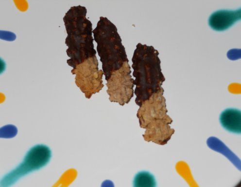

Emi’s favourite christmas cookies
Traditional Maronistangerl
This recipe is less well-known as the widespread Vanillekipferl (find Laura’s recipe here). I’ve prepared them first 3 years ago and, since then, they are one of my favorite cookies. But attention, it does take quite some time to prepare them. However, it’s totally worth it! Enjoy!
Preparation
- Preheat the oven (165-175°C)
- Put the dough into a pastry bag fitted with indented nozzle and form small long cookies on baking paper on a baking tray. Make sure to leave enough space between them.
- Bake for 10–12 minutes. Keep an eye on the cookies all the time! Warm the chocolate glaze while the cookies are in the oven.
- Take the cookies out of the oven and let them cool for a few minutes. Then, dip about half the cookie into the chocolate glaze.
Variations
- Add vanilla mark for a more intensive taste.
- Add nutmeg or cinnamon to the dough.
- Stick to cookies together with jam (e.g. berry jam) before dipping into the chocolate glaze.